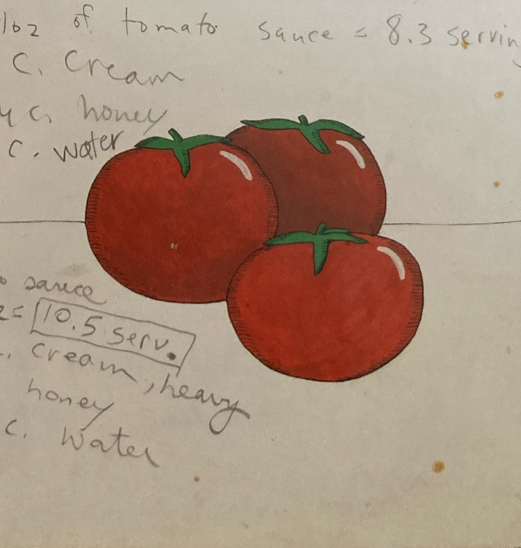

Home
Tomato Soup

Description
This soup is from a recipe book for kids, purportedly with three or less ingredients and steps. They do not count water as an ingredient.
Careful not to add too much honey, otherwise it's just unpleasant. You want savory! Unless you're looking for a sweet soup, then do whatever.
Produces one serving.
Ingredients
- 2/3 cup Tomato Sauce
- 2 Tbsps Heavy Cream
- 2 tsps Honey
- 1/3 cup Water
Steps
- Put all ingredients in a small saucepan. Add salt and freshly ground black pepper to taste. Bring just to a boil, stirring constantly with a wooden spoon.
- When nice and hot, pour into a mug. Let cool a bit and drink away. (Or use a spoon.)